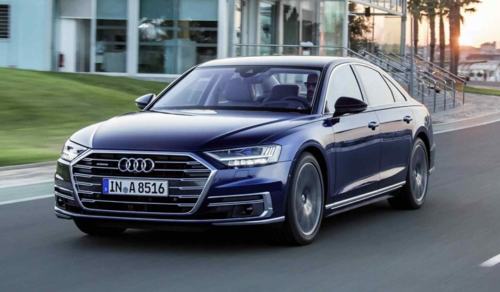

Audi A8

ÖNE ÇIKAN ÖZELLİKLER
Audi A8 ÖNEMLİ BİLGİLER
Öncelikle daha önce Alüminyum malzeme yoğunluğuyla çok konuşulmuştu araç. Ancak 2018 Audi A8 artık çelik, magnezyum, alüminyum ve karbon içeriyor. Aracın en dikkat çekici tarafı da üçüncü seviye otonom sürüşü desteklemesi. Ayni otoyolda saniyede 60km hızla kendi kendine gidebiliyor.
-------------------------------------------------------------------------------------------------------
SESLİ KOMUT SİSTEMİ
Sesli komut sistemi bugün dünyanın en gelişmiş sonucunu sunuyor. Zira, markanın yaptığı açıklamaya göre Audi A8 sesli komut sistemi üzerinde epey çalışılmış. Almanca ve İngilizce olarak verilen tüm komutları çok net algılıyor. Tepkileri de hızlı ve doğru.
------------------------------------------------------------------------------------------------------------
SÜRÜŞ KONFORU
Pek çok otorite, sürüş konforu için Audi A8 öneriyor. Zira, araçta müthiş bir süspansiyon ve gürültü kontrol alt yapısı çalışıyor. Gerçek bir teknoloji üssü gibi tasarlanmış olan otomobilde AI Aktif Yürüyen Aksam adlı bir teknoloji var. Bu teknoloji ile her bir tekerliğin yoldaki her bir pürüzü absorbe etmesi mümkün kılınmış.
--------------------------------------------------------------------------------------------------------------
Audi A8 DİZEL TEKNİK VERİLERİ
Motor Tipi ve Konumu: V, turbo, önde , uzunlamasına
Silindir Subap Sayısı: 6/24
Silindir Hacmi: 2967cc
Maksimum Güç: 210kW/286 HP 3750 d/d
Maksimum Tork: 600Nm 1250 d/d
0-100km/sn -Hızlanma: 5,9 sn.
Maksimum Hız: 250km/sn.
Şanzıman 8 vitesli otomatik Aktarma: 4X4
Ortalama Yakıt Tüketimi: 100km’de 5,6 litre
Toplam Ağırlık: 2050kg.
----------------------------------------------------------------------------------------------------------
Audi A8 BOYUTLARI
Uzunluk:5172mm
Genişlik:1945mm
Yükseklik: 1473mm
Dingil Mesafesi: 2998mm
Depo Kapasitesi: 72 litre
Bagaj Hacmi: 505 litre
----------------------------------------------------------------------------------------------